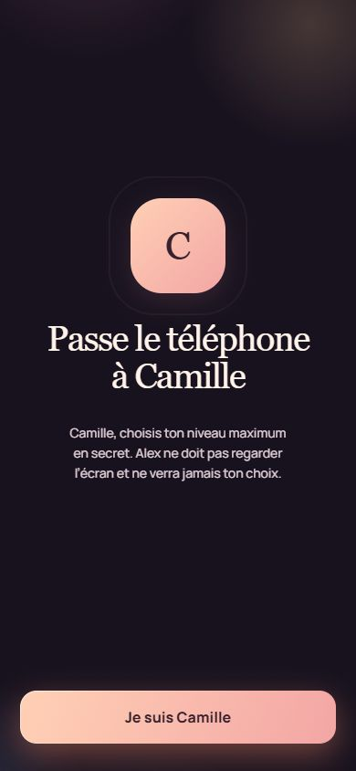
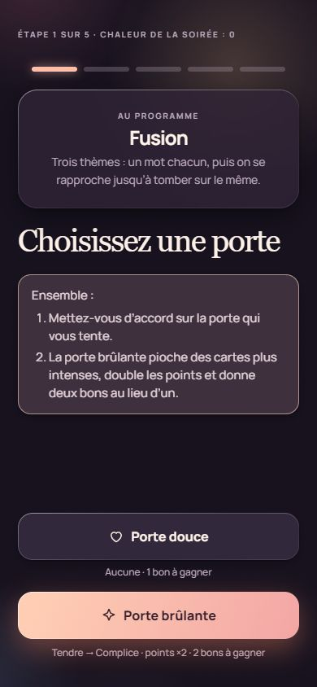
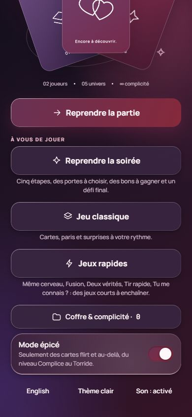

01 · UN SECRET CHACUN
À l’aise, tous les deux.
Chacun choisit son niveau en privé. Le jeu retient le plus doux, sans révéler qui a choisi quoi.
Le jeu à deux, pour ceux qui ont déjà une histoire
Six jeux, des choix secrets, une soirée qui prend forme à deux. Pour rire de ce que vous savez déjà… et découvrir tout le reste.


01 / L’expérience
Le mode « Ce soir » relie cinq jeux courts en une soirée avec des choix, des surprises et une fin. Vous pouvez aussi lancer chaque jeu séparément.
Chacun choisit son niveau en privé. Le jeu retient le plus doux, sans révéler qui a choisi quoi.
Douce ou brûlante ? Le niveau, les points et les bons à gagner changent avec votre décision.
 03 · JAMAIS JUSTE UNE QUESTION
03 · JAMAIS JUSTE UNE QUESTIONPrédictions, paris, bluff, réponses secrètes, jokers et vrais défis : la conversation devient un jeu.
02 / À vous de jouer
Trois mini-exemples inspirés des vraies règles et de vraies cartes du jeu. Le jeu complet contient aussi « Tu me connais ? », « Deux vérités », le Classique et le parcours « Ce soir ».
Démo locale à deux mains : aucune réponse n’est envoyée ni simulée par un faux partenaire.
03 / Ce qui change tout
À vous de choisir : se passer un écran ou jouer chacun sur le sien, à proximité, sans serveur pour la partie Bluetooth.
Le mode épicé change aussi l’ambiance visuelle. Le niveau intime reste un choix mutuel, et passer une carte n’exige aucune explication.
Les réponses choisies, les bons gagnés et l’historique de complicité restent sur le téléphone. Pas de compte, pas de publicité.
Six jeux, cinq univers Classique, une soirée guidée, 6 065 questions et thèmes bilingues, plus des jokers et des défis finaux.

Une ambiance, pas un interrupteur
Le mode épicé transforme la palette aubergine et vin, puis adapte les cartes à votre niveau commun. L’un peut toujours ralentir, passer ou choisir la porte douce. C’est vous qui donnez le tempo.
Tester un jeu ↗04 / Le marché, sans tricher
Nous avons regardé les vrais prix et les volumes annoncés par 14 éditeurs. Le nombre de cartes ne dit pas à lui seul si une soirée sera bonne ; voici les faits pour comparer.
| Jeu | Prix affiché | Volume annoncé | Mécaniques / format | À savoir |
|---|
Prix publics relevés le 3 octobre 2026, en devise d’origine ; offres, taxes, livraison et prix locaux peuvent varier. Le volume annoncé peut décrire tout le catalogue, pas la seule part incluse dans le tarif indiqué. Les nombres de mécaniques non annoncés sont indiqués comme tels ; « un format principal » décrit le fonctionnement observé, pas un classement officiel. Une activité, une aventure et une question ne sont pas la même unité. Chaque nom mène à sa source. Méthode et notes complètes ↗
Le prochain rendez-vous est chez vous
Il reste peut-être une question, un pari ou une porte qui change toute la soirée.
Télécharger Déjà Vous · Android APK gratuit · 18+ · Les données du jeu restent sur votre téléphone